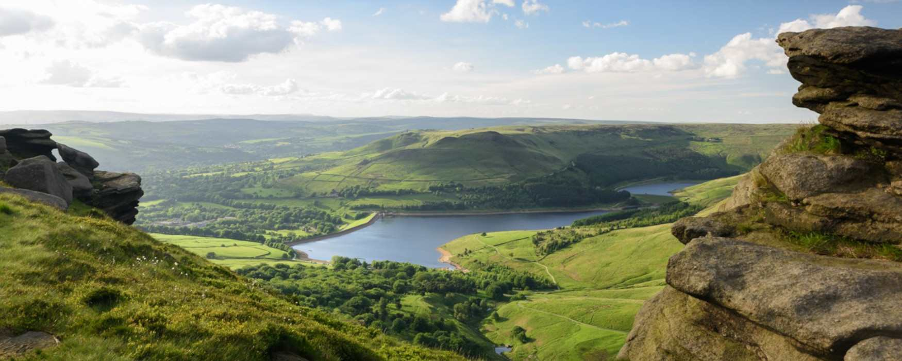

Home Manchester Countryside Manchester Arndale Manchester Galleries Manchester Festivals
North of the city - around the towns of Bury, Bolton, Wigan, Oldham, Rochdale, Salford and Tameside - you'll find more than 500 square miles of inspiring countryside, crisscrossed by historical waterways and dotted with picturesque towns and fascinating attractions that make for great days out of the city.
Click here to find out much more! 